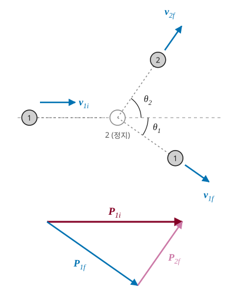

← 목차
2차원 충돌 (collisions in two dimensions)
두 물체가 정면으로 부딪히지 않으면 충돌 뒤 처음 축을 벗어나 움직인다. 이런
2차원 충돌
에서도 닫힌 고립계의 선운동량 총합은 충돌 전과 뒤가 같다.
(9.8.1)
성분마다 따로 성립한다. 정지한 물체 2에 물체 1이
축을 따라 부딪히면
(9.8.3),
(9.8.4)이다.
탄성 충돌이면 운동에너지 합도 같아서
(9.8.2)이다.
